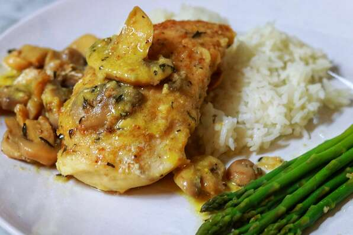

Deviled Chicken Breast

Description
Deviled chicken is a popular in the South American dish, appreciated for its simplicity and spiciness.
Its name “deviled” is a reference to the heat of the dish
The chicken is typically baked or broiled, although deep fried versions do exist,
and it is traditionally served with vegetable sides like collard greens or corn.
Ingredients
- 1/8 cup italian-style dried bread crumbs
- 4 skinless, boneless chicken breasts
- 1 tablespoon olive oil
- 1/2 cup dry white wine
- 1/2 teaspoon ground savory
- 1/4 teaspoon salt
- 1(4.5 ounce) can sliced mushrooms
- 1 tablespoon lemon juice
- 1 tablespoon honey mustard
Steps
- Place breadcrumbs in a large, resealable plastic bag. Add chicken, seal bag, and shake to coat chicken with breadcrumbs.
- Heat oil in a large, nonstick skillet over medium heat. Add chicken. Cook 3 minutes on each side, or until browned.
- Add wine, savory, salt, and mushrooms to the chicken. Cover, and reduce heat. Simmer for 15 minutes, or until chicken is done.
- Remove chicken and mushrooms with slotted spoon, and place on serving plate.
- Add lemon juice and mustard to skillet, and stir well. Heat through. Serve sauce with chicken.